iOS 요청서 8건 · Android 1:1 비교
기준: Android 8c1068b(v46) · iOS 수정 후 시뮬레이터(iPhone 16e, 데모 데이터) · 2026-10-29. 왼쪽 Android 캡처는 Android 레포
docs/test-reports/2026-10-28-ios-parity/screenshots, 오른쪽은 IOSHandoffParityUITests 캡처. 데모 데이터가 달라 금액·일정 이름은 다릅니다.
01 후기 입력 상자 전체에서 쓰기같음
| Android | BodyInput 상자 전체가 초점 자리 |
|---|---|
| iOS | 상자에 contentShape + 빈 곳 누르면 @FocusState 로 초점. 덮개 단추 없음(칸 위 누름·길게 눌러 고르기는 칸이 먼저) |
| 확인 | 칸 아래 빈 곳 누름 → 키보드 · 바깥 눌러 내림 → 다시 빈 곳 → 키보드(UI 테스트). 시뮬레이터 캡처에는 키보드가 안 찍혀 커서로 봄 |
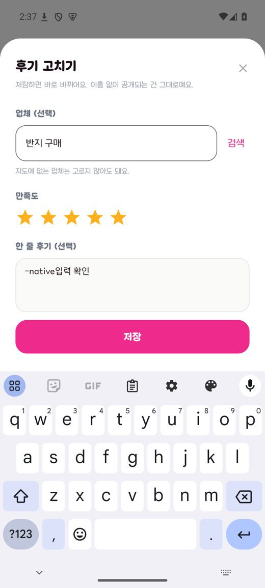
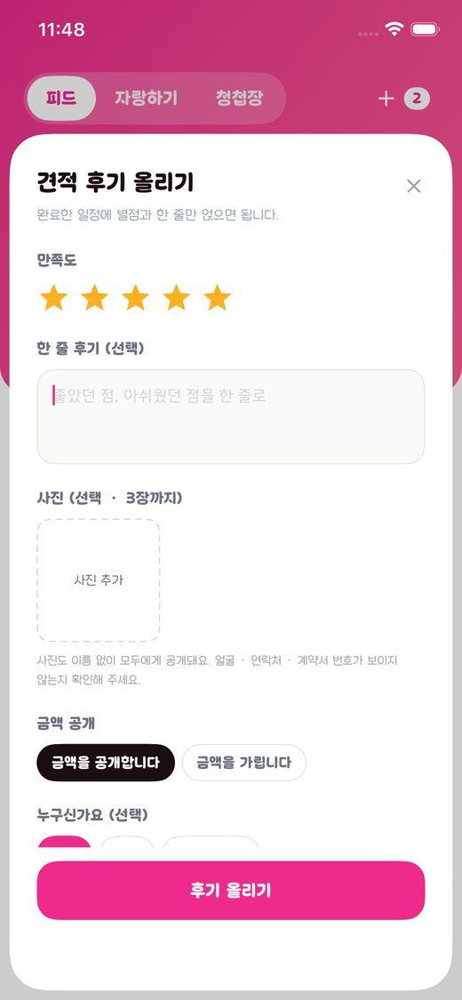
02 보드가 기본 · 📅 달력 / 🗂️ 보드같음
| Android | view = LIST 기본, 아이콘 이름, LazyColumn 줄 단위 |
|---|---|
| iOS | view = .board 기본, 같은 이름, 처음부터 보드 목록도 받음(refresh), 보드 목록을 LazyVStack 으로 카드 한 장씩(화면 전체를 감싸면 달력 모드 접근성 질의가 끝나지 않아 보드로 좁힘), 묶음은 목록이 바뀔 때 한 번만 |
| 잡은 것 | 줄 단위로 바꾸며 뼈대 키(0…4)와 일정 id 가 겹쳐 받은 카드가 빈 회색으로 남던 것 — Android 처럼 board-loading-N · board-plan-id 키로 나눔 |
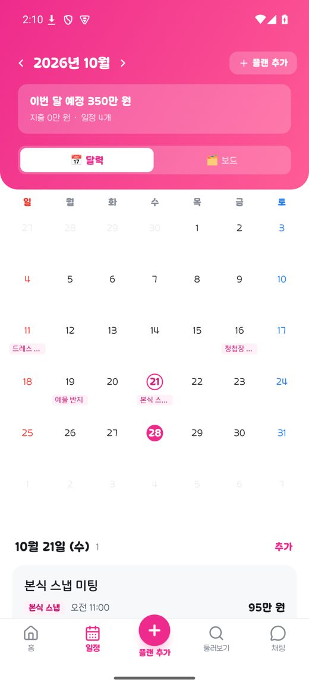
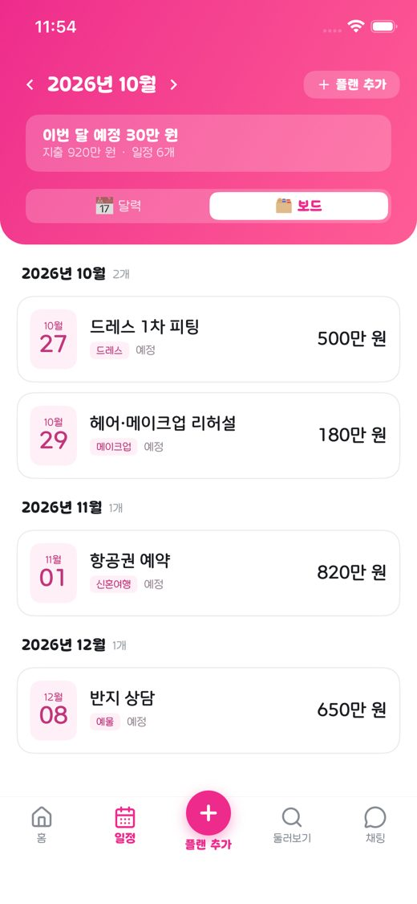
03 준비 패스 마지막 구역 가운데원인이 다름
| Android | 네이티브 PassIntro — 이미 가운데(320dp · 130% 확인) |
|---|---|
| iOS | 웹뷰 pass-intro.html. 앱의 흐름 모드에서 구역이 position:relative 인데 iOS 덮어쓰기의 left:24px 가 구역 전체를 24pt 오른쪽으로 밀었음 + 페이드 오프셋이 가로 이동으로 남음(35px). 흐름에서는 좌우 0, 가로 오프셋 0 |
| 확인 | 캡처 픽셀로 버튼 분홍 면의 가운데 = 화면 가운데(±3pt). 웹뷰 접근성 프레임은 ±20pt 어긋나 쓰지 않음 |
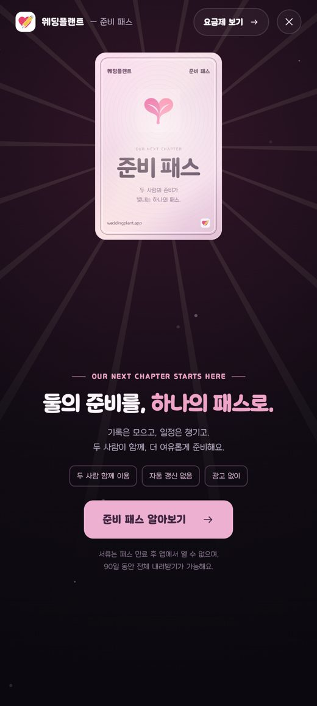
04 원화 기대 화면의 달러 · 고정 원화 문구같음
| Android | 년간 365일 동안, FROM_LABEL = 월간 · 년간 · 평생, 가격은 Play 상품값 |
|---|---|
| iOS | 같은 두 문구(요금제 · 프로필 패스 카드 · 청첩장 첫 화면). 가격은 그대로 Product.displayPrice |
| 달러 원인 | 표시 통화는 기기 언어가 아니라 App Store 계정의 나라(storefront)입니다. 캡처의 $4.99 는 미국 계정(샌드박스·TestFlight 테스터 계정 포함)에서 정상 동작. 로컬 StoreKit 구성은 KOR 이라 원화. 실제 한국 계정 결제창 대조는 실기기에서 별도 확인 필요 |
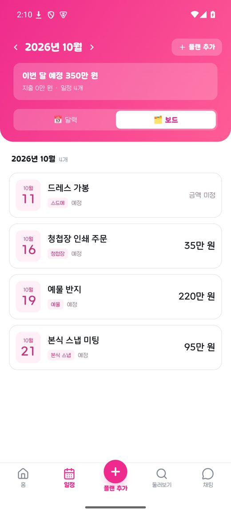
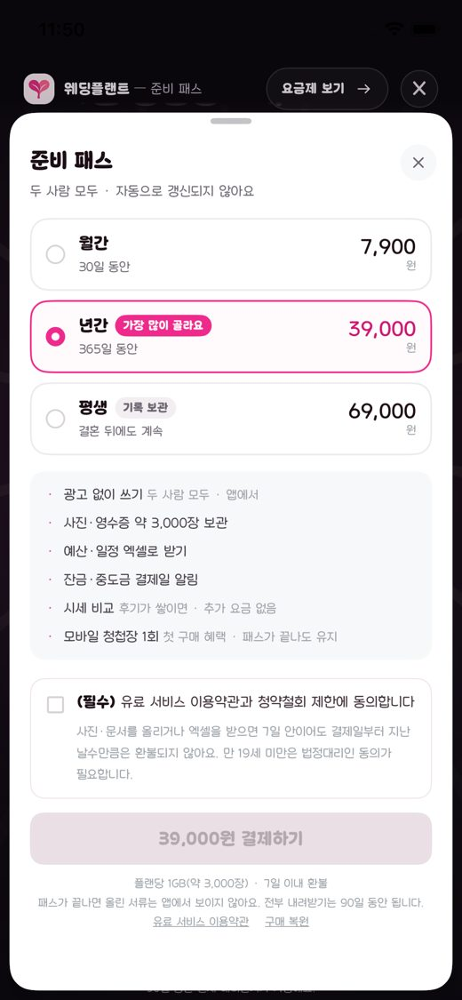
05 엑셀 버튼 회전 테두리같음
| Android | PassExportButton.passHighlightBorder(16.dp) |
|---|---|
| iOS | 같은 PassHighlightBorder(radius: 16) 를 버튼 면에. 누름은 받지 않음, 패스 유무 갈래 그대로, 백그라운드면 멈췄다 돌아오면 다시 |
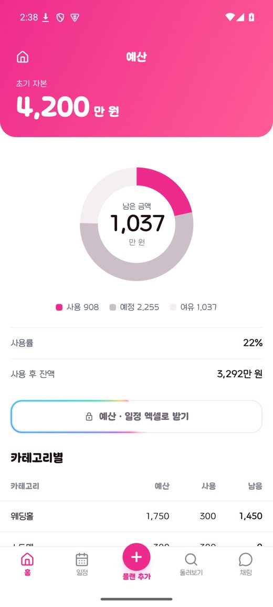
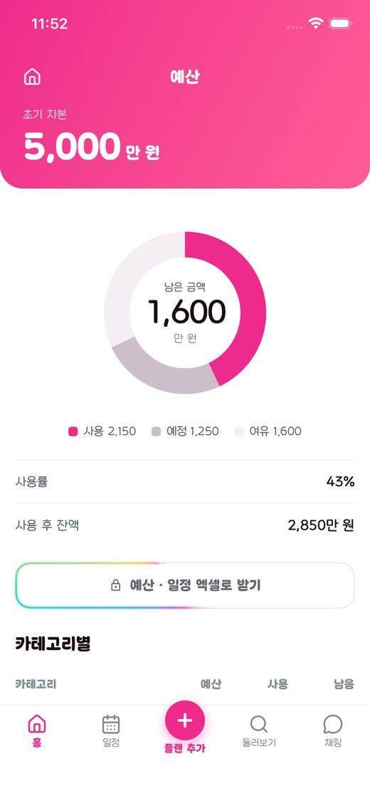
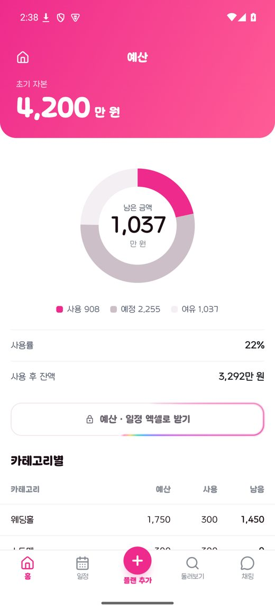
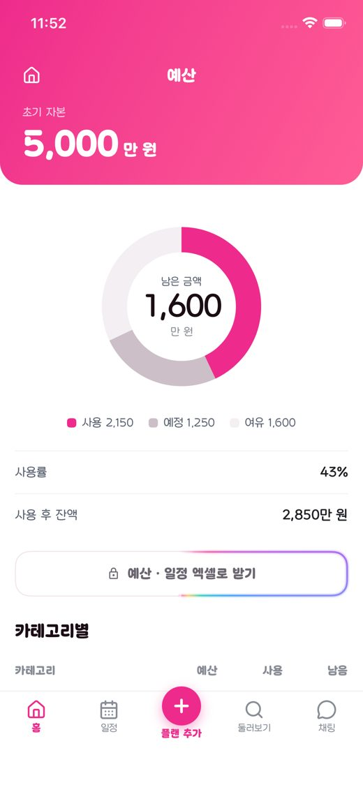
06 + 옆 작성 가능한 후기 수같음
| Android | FeedPostButton — 서버 postableScheduleCount, 못 받았으면 숫자 없음, 0 은 0, 돌아올 때 다시 받기, 늦은 답 무시, 실패해도 유지 |
|---|---|
| iOS | 같은 규칙. 예전 iOS 는 실패하면 값을 지웠음(try? → nil) — 고침. 돌아올 때(onAppear · 앱 활성화) 개수만 다시 받음. VoiceOver 내 후기 올리기, 작성 가능한 후기 N개 |
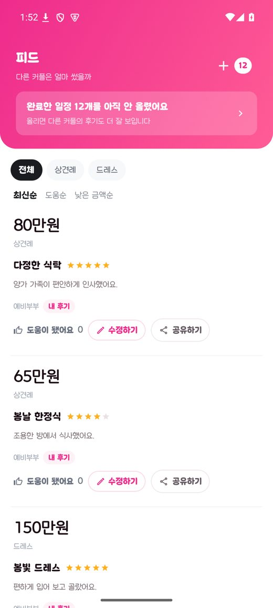
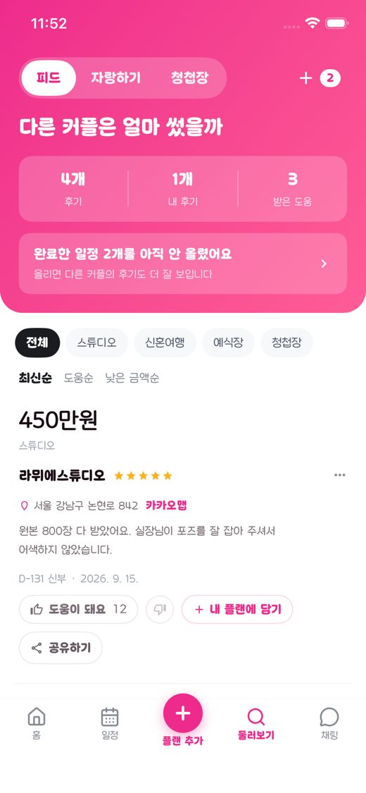
07 지난 날짜의 새 플랜 → 결제함 · 완료같음
| Android | PlanRules.completeNewPastPlan, 결제 칸 켠 채 잠금 + 안내, 생성(isPaid=true) 뒤 그 id 로 완료, 완료만 실패하면 다시 눌러도 생성 1번(완료 처리 다시 시도), 서류는 완료와 나란히 |
|---|---|
| iOS | 같은 규칙·문구. 오늘·미래·미정·수정은 그대로. 옛 게스트 일정도 완료로 기기에 적음 |
| 확인 | Core PastPlanRulesTests(KST 자정 경계 포함) · 앱 PastPlanRegistrationTests 5개(어제 / 오늘·미래·미정 / 수정 / 완료 실패 뒤 재시도에서 POST 1번 / 게스트) |
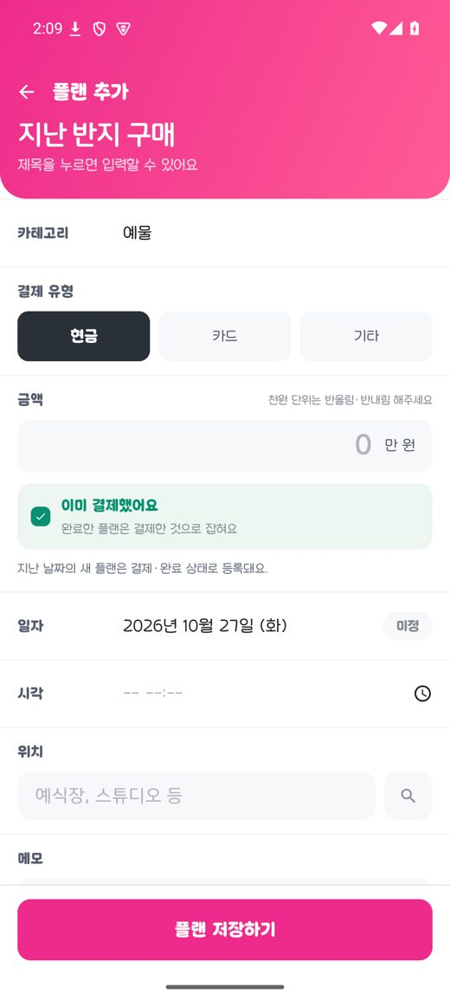
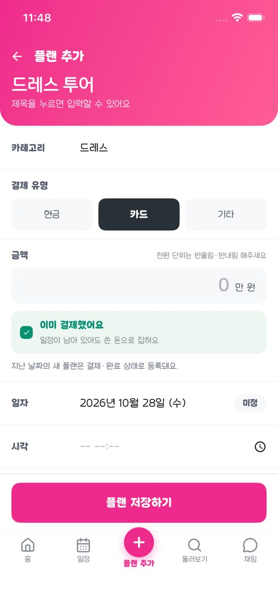
08 스크롤 끊김측정 못 함
| Android | 보드 LazyColumn · 패스 효과 계산 줄임. 에뮬레이터 지연 프레임 4.46% → 5.48%(혼재) — 개선 확정 안 함 |
|---|---|
| iOS | 보드 목록을 LazyVStack + 묶음 미리 계산. 예산 지출 목록 · 달력 그날 목록은 Android 도 그대로라 손대지 않음(흐림 덮개가 걸린 자리, 측정 없이 구조를 바꾸지 않음) |
| 남은 것 | 실제 iPhone + Instruments(hitch)로 같은 데이터 전후 비교. agent-device perf frames 는 시뮬레이터에서 동작하지 않음 |